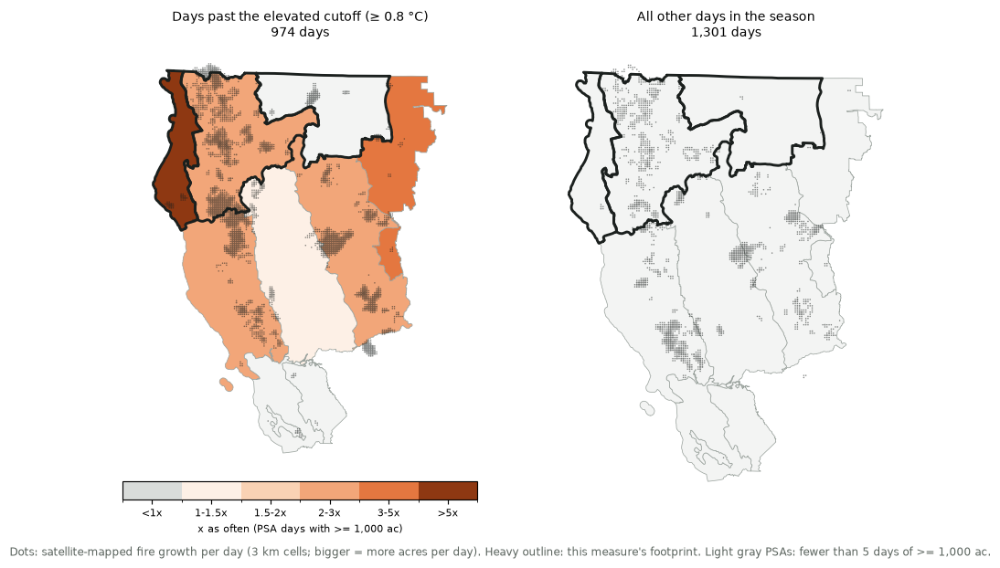

Calibrated predictor · Northern California, offshore season (Sep, Oct, Nov) · footprint: North Coast, Northwestern Mountains and Northeast California · today's run 2026-10-24 03:44 PT
Air temperature at about 5,000 ft (850 hPa) from the Medford, Oregon weather balloon, early morning (12 UTC, ~5 AM PDT), minus the normal for that date (2001–2025).
Warm air aloft marks a ridge of high pressure: sinking, drying air, a lid on the marine layer, hot and dry days, and on offshore days a warm, dry wind. It's measured against the date's normal so a warm August day isn't credited just for being August.
Dot: the weather-balloon site.
This measure is scored against fire growth inside its footprint: North Coast, Northwestern Mountains and Northeast California, PSAs NC01 North Coast, NC04 Northwestern Mtn, NC06 NE California. Only acres that satellites saw burning inside those PSAs count toward its big growth days.

Left: fire growth per day on the offshore season days past the elevated cutoff, with each PSA shaded by how much more often it had a day of at least 1,000 acres on those days than on the other days of the season. Right: growth per day on all the other days. If the measure matches where its weather acts, the left map's growth and shading should concentrate inside the outlined footprint.
On a typical offshore season day, 2.3% of days have at least 5,000 acres of satellite-mapped fire growth in North Coast, Northwestern Mountains and Northeast California. When this measure is past the elevated cutoff, such days are about 2.1 times as likely as usual for the same time of year. The cutoff is the most inclusive one that reaches ×2 with at least 25 days of history behind it.
How the odds grow as the cutoff gets stricter (higher values). Cutoffs beyond the "high" mark rest on fewer days, so that end of the curve is noisier.
The share of offshore season days at each value: all days (dashed) and days with ≥5,000 acres of growth (orange). The further the orange curve sits toward the cutoff side, the more useful the measure.
North Coast, Northwestern Mountains and Northeast California, offshore season, 2001–present. Acres are only those inside the footprint; fire names and acres from satellite detections inside mapped perimeters. 47 of 54 days with ≥5,000 acres were past the elevated cutoff ("no obs": a station didn't report that day).
| Fire day | Acres (footprint) | Main fire (its acres) | Run (mi) | PSA | ERC pct | Value | Past cutoff? |
|---|---|---|---|---|---|---|---|
| 2020-09-08 | 195,680 | AUGUST COMPLEX (197,534 ac) | 16.5 | NC04 | 99th | 1.2 | elevated |
| 2021-09-07 | 66,301 | ANTELOPE (27,102 ac) | 8.6 | NC06 | 99th | 8.0 | elevated |
| 2020-09-07 | 42,843 | RED SALMON COMPLEX (25,291 ac) | 4.0 | NC04 | 99th | 11.2 | high |
| 2021-09-08 | 40,286 | ANTELOPE (22,593 ac) | 11.1 | NC06 | 98th | 4.8 | elevated |
| 2020-09-27 | 33,033 | AUGUST COMPLEX (40,772 ac) | 7.6 | NC04 | 60th | -2.2 | no |
| 2020-09-28 | 30,421 | AUGUST COMPLEX (34,820 ac) | 3.4 | NC04 | 67th | 6.1 | elevated |
| 2018-09-05 | 28,686 | DELTA (27,589 ac) | 13.8 | NC04 | 91st | 6.4 | elevated |
| 2020-09-09 | 23,191 | AUGUST COMPLEX (49,537 ac) | 5.0 | NC02 | 98th | 5.6 | elevated |
| 2021-09-06 | 20,940 | HAYPRESS (RIVER COMPLEX) (12,405 ac) | 3.1 | NC04 | 96th | 4.2 | elevated |
| 2021-09-09 | 19,277 | ANTELOPE (16,395 ac) | 2.7 | NC06 | 98th | 4.8 | elevated |
| 2020-09-13 | 19,262 | AUGUST COMPLEX (37,787 ac) | 5.1 | NC02 | 96th | 7.3 | elevated |
| 2006-09-01 | 18,716 | PIGEON (BAR COMPLEX) (17,233 ac) | 12.7 | NC04 | 98th | 4.9 | elevated |
| 2017-09-03 | 15,565 | OAK (ECLIPSE COMPLEX) (5,439 ac) | 1.6 | NC04 | 97th | 11.9 | high |
| 2017-09-01 | 13,430 | ISLAND (SALMON AUGUST COMPLEX) (6,163 ac) | 1.1 | NC04 | 96th | 7.9 | elevated |
| 2021-09-05 | 13,388 | HAYPRESS (RIVER COMPLEX) (7,033 ac) | 1.6 | NC04 | 95th | 5.4 | elevated |
Run: how far that day's newly burned area reached beyond everything the fire had burned before, from the 100 m satellite day-of-burn grid (on a fire's first day, the span of that day's burn). ERC pct: energy release component in the PSA where the fire grew most, ranked against that PSA's 2005–present history.
How the odds of a ≥5,000-acre day in North Coast, Northwestern Mountains and Northeast California change when this measure is past its elevated cutoff and the fuels are critically dry: ERC (energy release component) at or above the 90th percentile, averaged over the footprint's PSAs (NFDRS from the toolkit's RAWS reference data, 2005–present).
| Days | Share with ≥5,000 ac | × season base (2.3%) | |
|---|---|---|---|
| Past cutoff and ERC ≥ 90th | 129 days | 24.8% | ×10.6 |
| Past cutoff, ERC below 90th | 690 days | 1.9% | ×0.8 |
| Not past cutoff, ERC ≥ 90th | 23 days | 17.4% | ×7.5 |
| Neither | 1,069 days | 0.3% | ×0.1 |
Weather and fuels multiply: the same wind event does far more on critically dry fuels. Days before 2005 have no NFDRS history here and are left out of this table.
Growth isn't the only question: offshore and dry days also start the fires that become large. On the 1,084 offshore season days past the elevated cutoff, a fire that went on to burn at least 1,000 acres started in North Coast, Northwestern Mountains and Northeast California on 16 of them (1.5% of those days, against 0.9% on a typical offshore season day); about ×1.6 the usual odds for the date. That's 80% of the 20 large-fire starts there since 2001.
Fires and start dates from the satellite fires table (MTBS / WFIGS perimeters ≥ 1,000 acres; discovery from FPA FOD / InFORM).
% of each ensemble's members past the elevated cutoff (≥ 0.8 °C), by fire day.
| Model | 10/24 | 10/25 | 10/26 | 10/27 | 10/28 | 10/29 | 10/30 | 10/31 | 11/01 | 11/02 | 11/03 | 11/04 | 11/05 | 11/06 | 11/07 |
|---|---|---|---|---|---|---|---|---|---|---|---|---|---|---|---|
| All models | 8 | 92 | 1 | 0 | 2 | 1 | 0 | 3 | 17 | 41 | 32 | 31 | 32 | 28 | 33 |
| ECMWF AIFS ENS (AI) | 16 | 92 | 0 | 0 | 2 | 2 | 0 | 2 | 32 | 58 | 34 | 24 | 34 | 30 | 48 |
| NOAA AIGEFS (AI) | 0 | 74 | 0 | 0 | 3 | 3 | 0 | 0 | 13 | 39 | 26 | 39 | 39 | 32 | 29 |
| ECMWF IFS ENS (physics) | 18 | 100 | 0 | 0 | 2 | 0 | 2 | 8 | 18 | 22 | 10 | 18 | 22 | 26 | 36 |
| NOAA GEFS (physics) | 0 | 100 | 3 | 0 | 0 | 0 | 0 | 3 | 6 | 45 | 58 | 45 | 32 | 23 | 19 |
| 10/24 | 10/25 | 10/26 | 10/27 | 10/28 | 10/29 | 10/30 | 10/31 | 11/01 | 11/02 | 11/03 | 11/04 | 11/05 | 11/06 | 11/07 | |
|---|---|---|---|---|---|---|---|---|---|---|---|---|---|---|---|
| Forecast ERC percentile (area mean, FEMS) | 64 | 64 | 59 | 61 | 64 | 64 | 64 | 64 | 64 | 64 | 64 | 64 | 64 | 64 | 64 |
| × usual odds of a ≥5,000-acre day | ×0.2 | ×0.8 | ×0.1 | ×0.1 | ×0.2 | ×0.1 | ×0.1 | ×0.2 | ×0.3 | ×0.4 | ×0.4 | ×0.4 | ×0.4 | ×0.3 | ×0.4 |
Odds combine this measure (each member past the cutoff or not) with the forecast fuels (ERC ≥ the 90th percentile = critically dry), using the history in "Weather + fuels" above. Faded: past the 7-day FEMS forecast, the last day's fuels carried forward.
Darker = more members past the cutoff. The models are weighted equally in "All models". How to use it: Reading the calibrated outlook.